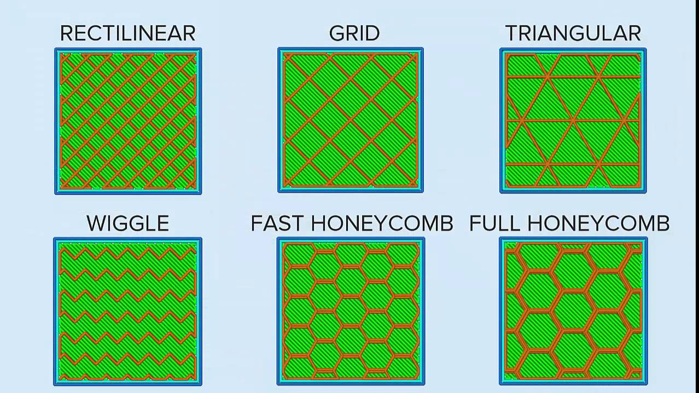

So you have drawn something cool on fusion, and you want to bring it intp the real world, what do you do?
Depending on the size, you can either 3D print it, or Laser cut it.
Gone are the days of having to beat metal together until you get the rough shape of your part
Now with the advancement of 3D printing technology, you can get a part thats leaps and bounds more accurate to its source drawings and only taking a fraction of the time to produce, you dont even need to use manual labour to make the part anymore, you just insert the file into the printer and let it work its magic
It is crazy to think about how fast 3D printing has become one of the most widely used ways to rapidly produce a prototype. Although the technology was invented in the 1980s, it only became commercially popular with industry workers and hobbyists in 2006 as the technology advanced. However, in an extremely short span of time, 3D printing has become extremely widespread. To the point where its rendered older forms of rapid prototyping irrelvant. It has become absolutely indispensible for someone looking to create a brand new product from an idea. This is one of the many indispensible skills i will learn from this module.
So enough about the history of the 3D printer, how do i operate it?
That brings us to our next point about
So what does Ultimaker Cura allow you to do?
Ultimaker Cura allows you to convert your 3D model's STL file into a G-code file. It also allows you to control how the printer will print your part
Ultimaker cura will first prompt you to select what kind of 3D printer that you own, and it will change its settings accordingly to match your 3D printer, things like size of the print bed and the nozzle size are both external factors cura cannot change.
3D printers are extremely versatile and allow you to print a wide variety of objects in anyway that you would like, examples being, colours, print speed, print details, durability of the part, infill density and more. I will now explain the different settings we were taught to change depending on what we wanted from our print.
1. Wall thickness, wall thickness is how thick the walls of your part is going to be(duh), since the inside of a 3d print is actually semi-hollow, depending on the settings you choose. The reccommended parameter given to us is 1mm
2. Layer height, layer height determines how much material a 3D printer will expend for a sliced layer of that part, and how many revolutions of the nozzle it will take to produce the part. Basically the lower you set this the more accurate your print will be to its 3D model counterpart as it will have less surface irregularities caused by thick layering (hopefully). But it will take more time. Setting it high has the opposite effect, reducing print time but reducing part quality as well. The reccommended setting for this is 0.2mm, but usually i set it abit higher to get a faster print.
3. Infill, infill determines how dense your print is, when you 3d print something, the 3D printer dosent actually fill the whole thing with plastic, that would be a waste of materials., it instead fills the inside with a hexagonal pattern called infill, the percentage determines how small the hexagons become, or in other words, how densely packed, or hollow, your part becomes. there are different types of patterns of infills too
